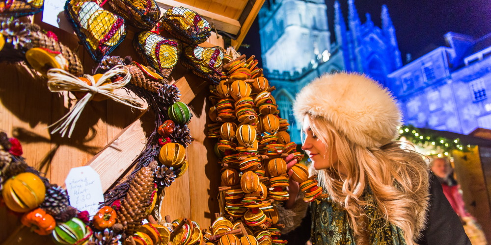
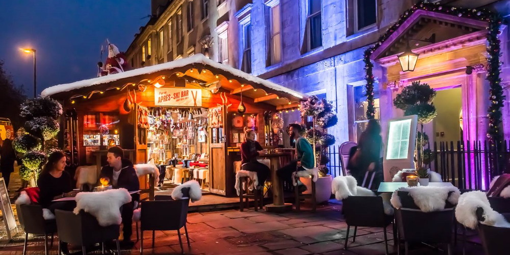
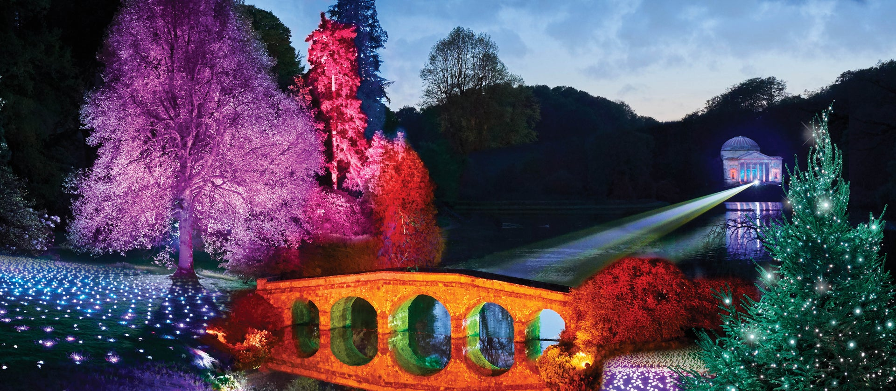
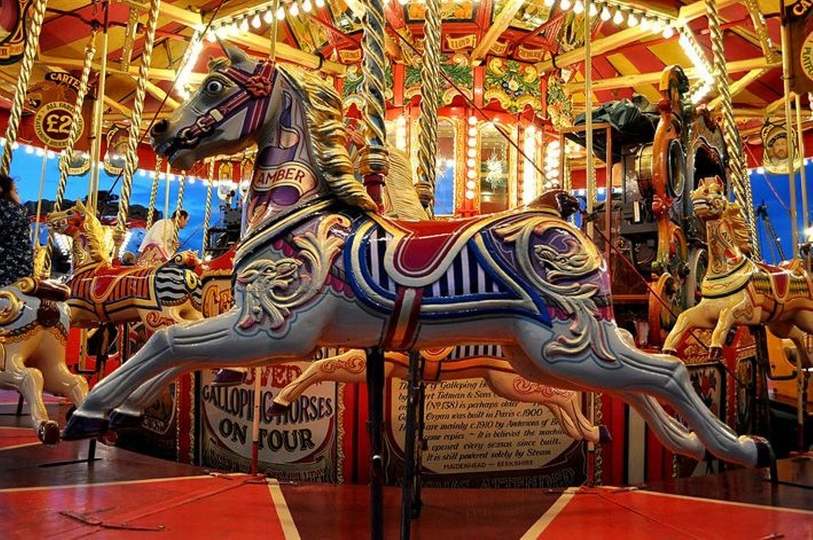

|  |
Visit the Bath Christmas MarketThe award-winning Bath Christmas Market is back for 18 days of magical merriment! With over 150 twinkling chalets spread out across Bath’s picturesque Georgian streets, it’s the perfect place to do a spot of Christmas shopping. |
Chill in the Après Ski Bar at Abbey HotelNo, you’re not in the Alps, but you’ll feel like you are at Abbey Hotel’s Après-Ski Bar! Step into the snow-topped Alpine lodge or snuggle up outside under a woolly blanket and enjoy hearty food and a steaming mulled wine. |
 |
|  |
Explore National Trust at ChristmasThere is lots going on at National Trust properties around the South West this festive season. Head on a Christmas trail at Prior Park Landscape Garden, wander around Stourhead taking in the illuminations, discover over 20 beautifully decorated Christmas trees at Lacock Abbey, or experience a very Victorian Christmas at Tyntesfield. |
Take a spin on the Victorian CarouselBath’s beloved Christmas carousel will be making a welcome return to the city this festive season. Enjoy a whirl on the beautiful Victorian carousel, which will be stationed in Stall Street. |
 |